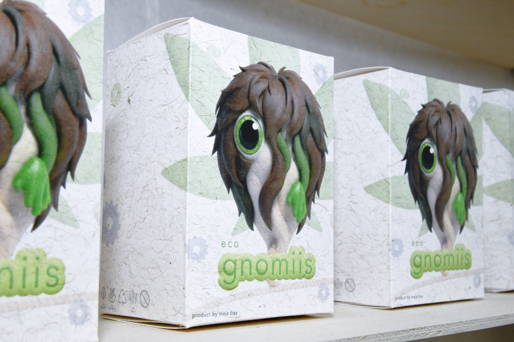
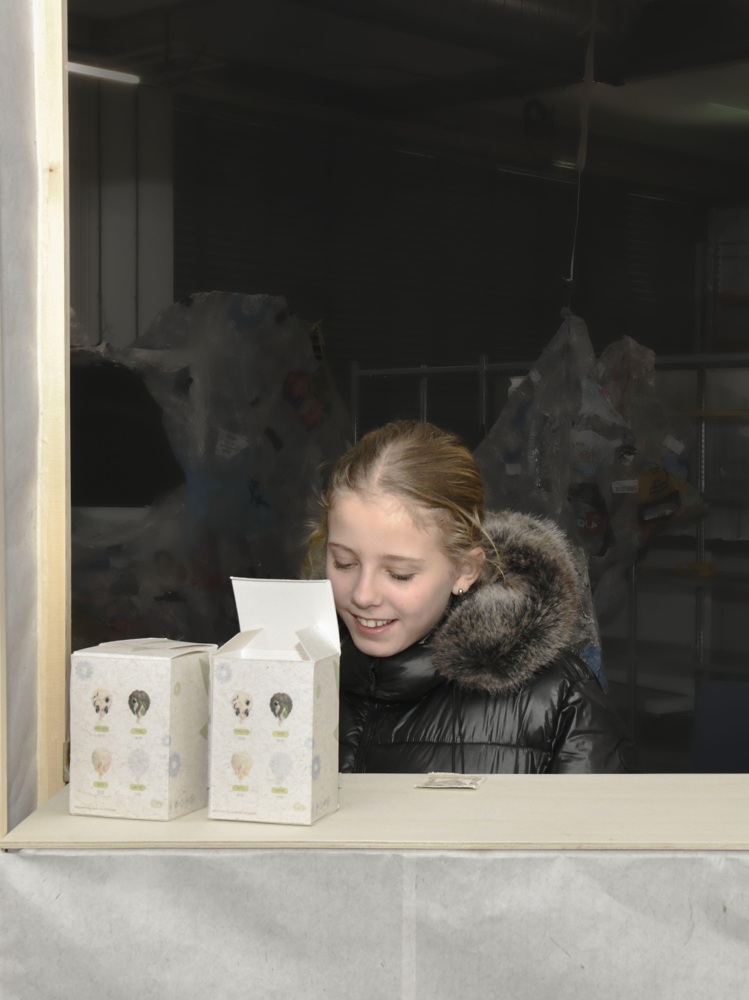
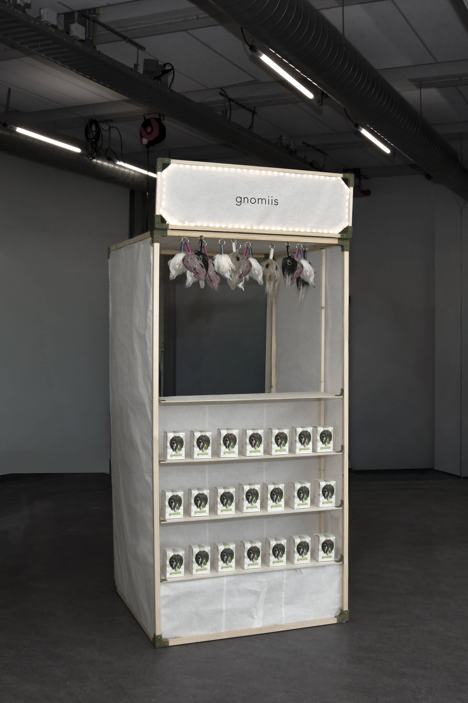

▸
▸
▸
2026
Graduation project, Bachelor in Arts
textiles
critical design
installation design
branding
▸
Gnomiis are blind-box collectible plushies made entirely from hemp: from the stuffing to the packaging. Gnomiis act as a mirror, merging eco-design with hyper-capitalism to reveal the contradictions in our sustainability narratives. Each Gnomii represents an ecological virtue, up for sale in the Gnomiis pop-up store.
Hemp offers remarkable potential as a sustainable alternative fibre, making it a trending choice for designers imagining more eco-friendly futures. Consequently, the aesthetics of eco design are dominated by soft, neutral tones designed to soothe our collective climate anxieties.
Gnomiis investigates this phenomenon by mimicking the shape and marketing of trendy blind-box toys. They explore the parallels between how two products, deceivingly different, create value in the same way. Aesthetic capitalism (how value is shaped by perception rather than production and logistics) shapes how we design and consume. In this framework, products tend towards becoming essentially “useless” beyond their aesthetics, as consumers prioritise form over function.
Eco-aesthetics mask the global systems built on exploitation, colonial histories, and economic inequality that shape the textile industry today. Systems that have made hemp harder to process and expensive to produce. Without these limiters, hemp might have simply been another mass-produced commodity. Thus, the “eco-aesthetic” becomes a signifier of privilege: the ability to write off guilt by the act of consuming one product over another, one that signals ecological awareness.
Like other popular collectible plushies, Gnomiis are both huggable and uncanny. A play on the uncomfortable realities of climate change, turning ethical concern into a consumable experience, revealing how hemp-based goods can replicate the forces of aesthetic capitalism.


